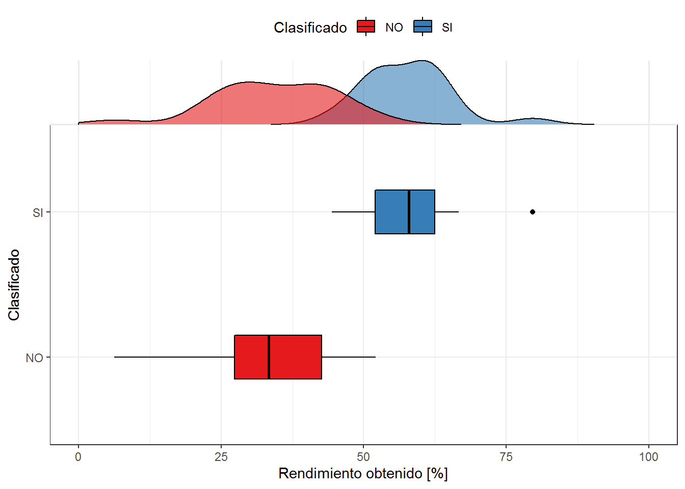

Este jueves 31 de agosto se inicia una nueva fecha doble de las clasificatorias Conmebol camino al mundial de Rusia 2018. Tal y como adelantamos en un post previo acá en datofutbol, en primer lugar Chile enfrentará a Paraguay en condición local y luego viajará a la altura de La Paz para “medirse con su similar” de Bolivia el martes 05 de septiembre.
Teniendo presente que hoy La Roja tiene 23 puntos y que queda un máximo de 12 puntos en disputa (4 fechas faltantes), cabe preguntarse ¿qué posibilidades tiene La Roja de clasificar?, lo que analizaremos en este post.
Los datos
Para el análisis tomaremos en cuenta todas las versiones previas de clasificatorias que se llevaron a cabo con el actual formato, es decir, todos los equipos enfrentándose entre sí en partidos de ida y vuelta. Así es como se consideran las clasificatorias a los mundiales de Francia 98, Corea-Japón 2002, Alemania 2006, Sudáfrica 2010 y Brasil 2014, completando un total de 48 ejemplos de participaciones de alguna selección en alguna clasificatoria.
Debido a que entre algunas versiones la cantidad de selecciones participantes difiere, y por lo tanto la cantidad de partidos y puntos en disputa también, como son los casos de Francia 98 y Brasil 2014 en las cuales no participó Brasil, para efectos de comparación entre versiones de clasificatorias no utilizaremos los puntos obtenidos sino que el rendimiento de los equipos, el cual se calcula según la siguiente fórmula:
- Rendimiento = ( Puntos obtenidos / (Partidos jugados x3) ) x100 [%]
Los datos de partidos jugados y puntos obtenidos por cada selección para cada clasificatoria fueron recogidos desde Wikipedia. Además de aplicar la fórmula del rendimiento, las selecciones fueron catalogadas según su condición de clasificación: SÍ y NO. Los 5tos lugares (excepto Francia 98), que otorgaron medio cupo al mundial respectivo, se consideraron por defecto en la categoría SÍ.
Visualizaciones y análisis
El siguiente gráfico describe las categorías de clasificación según el rendimiento obtenido por las selecciones, considerando una visualización de cajas y bigotes en la parte inferior y la distribución de probabilidad continua en la parte superior.

Se observa claramente la diferencia de rendimiento entre los equipos que clasificaron y los que no, con un traslape máximo de la función de probabilidad continua en aproximadamente un 47% de rendimiento. También se aprecia que la distribución de los equipos clasificados es menos dispersa que la distribución de los equipos eliminados.
La mediana de rendimiento para equipos clasificados es del 58%, mientras que para equipos eliminados la mediana es de 33%. Destaca el outlier del sector derecho correspondiente a la gran campaña de Argentina en las clasificatorias a Corea-Japón 2002, donde obtuvo un rendimiento del 80% ganando 13 partidos, empatando 4 y perdiendo solo 1. En contraste, la peor campaña la tiene Venezuela con un rendimiento del 6% camino a Francia 98, donde obtuvo solo 3 puntos producto de empates.
A continuación se incluye un histograma con la misma información anterior a modo de complemento para facilitar el conteo de casos de equipos clasificados y no clasificados, según intervalos de rendimiento de 5%. Posteriormente se presenta una “curva S”" con la probabilidad de clasificar según el rendimiento, construida a partir de un modelo bayesiano que considera por simplificación una probabilidad inicial de clasificar igual al 0.5.
Observando la curva de probabilidad, es posible ponerse en distintos casos hipotéticos según los nuevos puntos que obtenga Chile en las siguientes 4 fechas. A continuación el detalle de los más relevantes:
Según el modelo la clasificación se asegura (P=1) con un 52.1% de rendimiento, el cual se obtiene con 29 puntos. Es decir, si Chile gana sus dos partidos de local y el fallo del TAS no le quita los dos puntos que ganó por secretaría, clasificaría a Rusia 2018.
Si Chile gana 1 partido y empata otro, o bien gana 2 partidos pero el fallo del TAS es desfavorable, es decir tendría 4 puntos nuevos, completando 27 en total, obtendría un rendimiento del 50%. Con este rendimiento la probabilidad de clasificar es del 91.7% (Solo 2 equipos NO han clasificado con un rendimiento igual o mejor que este: Perú camino a Francia 98 y Colombia rumbo a Corea-Japón 2002).
Si Chile obtiene 3 nuevos puntos adicionales, su rendimiento sería del 48.1%. En ese caso la probabilidad de clasificar es del 50%. Esto corresponde a la probabilidad por defecto definida para todos los equipos solo por participar, por lo que representa una baja probabilidad (solo dos equipos han clasificado con un rendimiento igual o menor a este: 5to lugar de Uruguay para Alemania 2006 y Sudáfrica 2010).
Si Chile obtiene solo 1 punto adicional alcanza un rendimiento del 44.4%, entrando en la zona de descenso brusco de probabilidad de clasificar: según el modelo ese caso tiene solo 33.3% de probabilidad de clasificar, lo que es menor a la probabilidad por defecto, y se tiene solo un equipo que logró clasificar con ese rendimiento (5to lugar de Uruguay en Sudáfrica 2010).
En resumen, según los datos, con 6 puntos ya aseguramos clasificación, con 4 tenemos altas probabilidades de clasificar, pero de ahí hacia abajo se ve muy complicado. Por eso ganar los dos partidos de local son claves para las aspiraciones de la selección chilena, pudiendo alcanzarle en caso de que el fallo del TAS sea desfavorable.
Vamos La Roja!